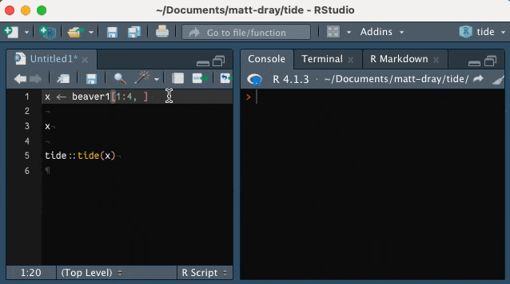
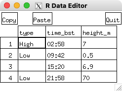
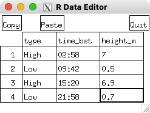

if (!require(remotes)) install.packages("remotes")
install_github("matt-dray/tide")
tl;dr
R has an interactive spreadsheet editor for dataframes that you can access with edit(). I made the function tide::tide() to generate automatically some code that will reproduce the changes you made manually with edit().
Edit
R’s edit() function invokes a text editor so you can amend an R object.1
Something special happens If you edit() a data.frame object: a somewhat-janky interactive spreadsheet-like editor appears in a new window.2
Click in a cell to amend a value, or click in the header for a menu that lets you change the column name, or switch between real and character classes. There are even buttons to copy and paste values.
Click the ‘quit’ button to confirm your changes. The edited data is returned to you back in the console.
But that’s not very reproducible. How can anyone recreate the amended dataframe from the original if your clicks and keypresses weren’t recorded?
Can we make edit() more reproducible?
Tide
Basic premise: create a function that accepts a dataframe as input, opens the edit menu, observes the updated values and generates code to reproduce the new object from the old.
I’ve created the concept package, {tide}, to do this.3 It has only one, eponymous function: tide().
Why ‘tide’? Well, it’s ‘edit’ backwards. And we’re ‘turning the tide’ on the edit() function to make it reproducible, geddit?4
You can install {tide} from GitHub. The {clipr} package, which can copy text to your clipboard, will also be installed.
So let’s get our feet wet with an example. Here’s a thematically-related data.frame of the tide table for London Bridge for May 1 2022.
tide_table <- data.frame(
type = c("High", "Low", NA_character_, "Low"),
time_bst = c("02:58", "09:42", "15:20", "21:58"),
height_m = c(7.0, 0.5, 6.9, 70)
)
tide_table type time_bst height_m
1 High 02:58 7.0
2 Low 09:42 0.5
3 <NA> 15:20 6.9
4 Low 21:58 70.0But whoops: the missing value should be ‘High’ and the height is wrong by two orders of magnitude for the 21:58 low tide.
So, let’s use tide::tide() on the dataframe to edit those values.
library(tide)
tide(tide_table)This opens a separate data-editor window. Here’s how it looks when it opens:5

And once I’ve made the adjustments manually:

And here’s what’s returned to the console once I’ve clicked the ‘Quit’ button:
Wrote code to clipboard
## type time_bst height_m
## 1 High 02:58 7.0
## 2 Low 09:42 0.5
## 3 High 15:20 6.9
## 4 Low 21:58 0.7You can see the edits have been successfully returned. This is also what you’d see if you just used edit().
The extra feature from tide() is evident in the message Wrote code to clipboard: the function generated some lines of code that will take you from the original to the edited object.
So if we now paste from the clipboard we get:
tide_table[3, 1] <- "High"
tide_table[4, 3] <- 0.7In other words, ‘replace the value in row 3, column 1 of the tide_table object with the string value "High"’, for example.
And if we actually run those lines, we can recreate the amended data.frame from the original:
tide_table type time_bst height_m
1 High 02:58 7.0
2 Low 09:42 0.5
3 High 15:20 6.9
4 Low 21:58 0.7So, hurrah, we now have a method of manually editing the table and getting some code back that can reproduce it.
Diet
To borrow another anagram of ‘edit’ the capability of the package is quite… lightweight. Some issues are that:
- the function currently only works if you amend individual values (cells), not if you change headers, or add rows and columns
- the returned code will operate on a cell-by-cell basis, so you might get
x[1, 1] <- "A"andx[2, 1] <- "B"where actually it could have been the more convenient to getx[1:2, 1] <- c("A", "B") - the returned code refers to columns by index, even though it’s more explicit to refer to them by name, like
x[1, "col1"] <- "A" - the returned code will be written in base R and will edit in place by index (i.e.
[<-), it doesn’t return {data.table}- or tidyverse-compliant code - you only get the code in your clipboard, it isn’t returned from the function
I might update the package to handle this stuff in future, or you can do it for me with a pull request in the GitHub repo.
But to be honest, the data editor is probably a bit too clunky and simple to be useful for most use cases. So there’s not much point expanding this package beyond a concept.
Or maybe the approach will pick up pace like the Severn Estuary tidal bore, who knows? Or maybe you think this post is a bore.6
Environment
Session info
Last rendered: 2023-07-02 12:36:29 BSTR version 4.3.1 (2023-06-16)
Platform: aarch64-apple-darwin20 (64-bit)
Running under: macOS Ventura 13.2.1
Matrix products: default
BLAS: /Library/Frameworks/R.framework/Versions/4.3-arm64/Resources/lib/libRblas.0.dylib
LAPACK: /Library/Frameworks/R.framework/Versions/4.3-arm64/Resources/lib/libRlapack.dylib; LAPACK version 3.11.0
locale:
[1] en_US.UTF-8/en_US.UTF-8/en_US.UTF-8/C/en_US.UTF-8/en_US.UTF-8
time zone: Europe/London
tzcode source: internal
attached base packages:
[1] stats graphics grDevices utils datasets methods base
loaded via a namespace (and not attached):
[1] htmlwidgets_1.6.2 compiler_4.3.1 fastmap_1.1.1 cli_3.6.1
[5] tools_4.3.1 htmltools_0.5.5 rstudioapi_0.14 yaml_2.3.7
[9] rmarkdown_2.22 knitr_1.43.1 jsonlite_1.8.5 xfun_0.39
[13] digest_0.6.31 rlang_1.1.1 evaluate_0.21 Reuse
CC BY-NC-SA 4.0